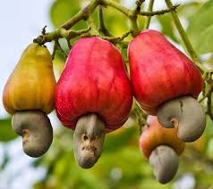

Bonjour et bienvenue sur notre page "SINEMATIALI VILLE ANCIENNE".
Ici vous trouverez tous sur la ville de sinematiali.
Nous vous donnons une ocasion unique de savoir d'abord comment la ville de sinematiali a été fondée, ensuite les riches agricole que cette ville regorge et enfin les richesses culturelles et traditionnelles de cette ville.
Sinematiali est une grosse bourgade bâtie en style soudanais avec des palais à étages.
Originaire d'Inde, la mangue est cultivée depuis 4 000 ans. Fruit du manguier, sa chair tendre et son goût sucré en font l'un des fruits tropicaux les plus consommés au monde. Représentant 4 % du PIB ivoirien, la mangue est le troisième fruit exporté par le pays derrière la banane et l'ananas. Générant plus de 10 millions d'euros de revenus dans les zones du nord où elle est cultivée, la mangue est un produit phare de la Côte d'Ivoire.
Aujourd'hui, deux espèces originaires d'Amérique produisent l'essentiel du coton dans le monde : Gossypium hirsutum, qui vient du Mexique, fournit 90 % de la production mondiale et Gossypium barbadense, qui vient des îles Barbade, donne les plus belles fibres et assure 5 % de la production.
Originaire du Brésil, la noix de cajou ou anacarde est le fruit de l'anacardier. Introduit en Côte d'ivoire dans les années 1950 comme plante forestière pour freiner l'avancée du désert, ce n'est qu'à partir de 1960 que la création des premières plantations s'est faite, dans le Nord du pays.